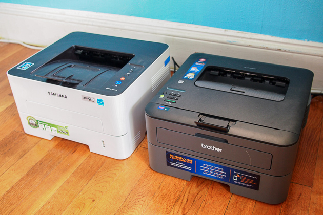

Printer Selection & Setup
Choosing and installing the right printing solution for your workplace.
Printers are essential but often overlooked. We help select devices that match your volume, speed, quality, and network requirements. Whether single-function or multifunction, networked or departmental, we ensure proper installation, driver configuration, and security from day one.
- Print volume and speed requirements analysis
- Single vs. multifunction device evaluation
- Network printing vs. USB configuration
- Printer model recommendations
- Hardware installation and setup
- Driver installation and configuration
- Network integration and security
- User training and access
